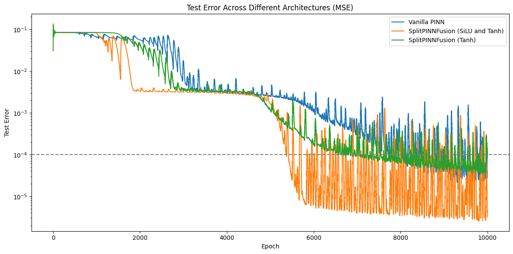
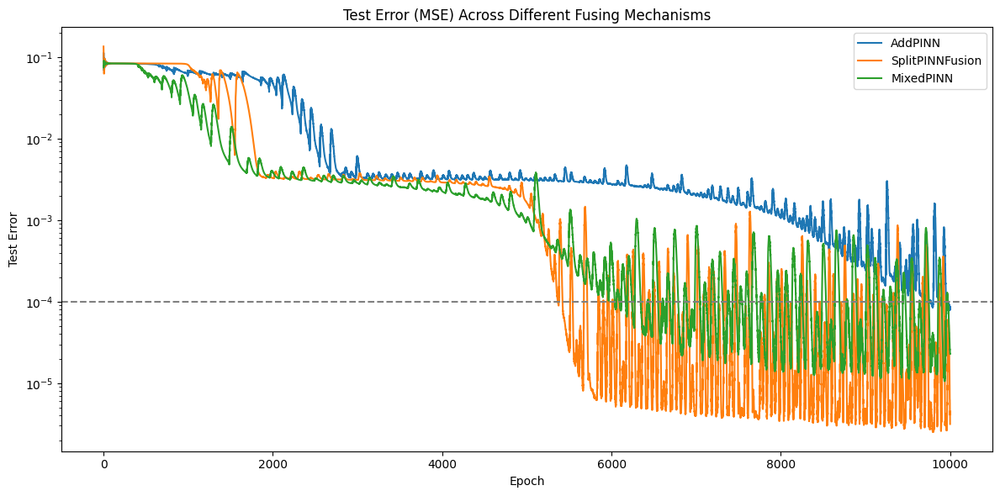
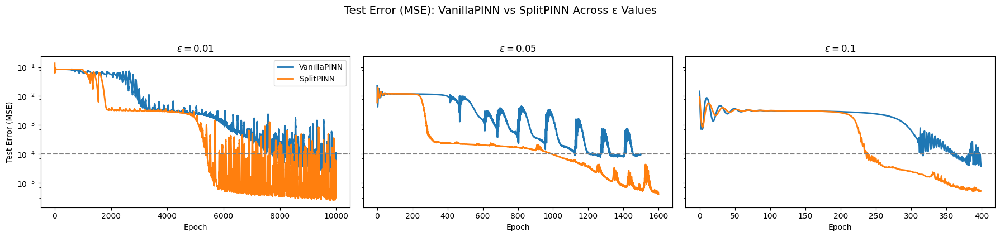
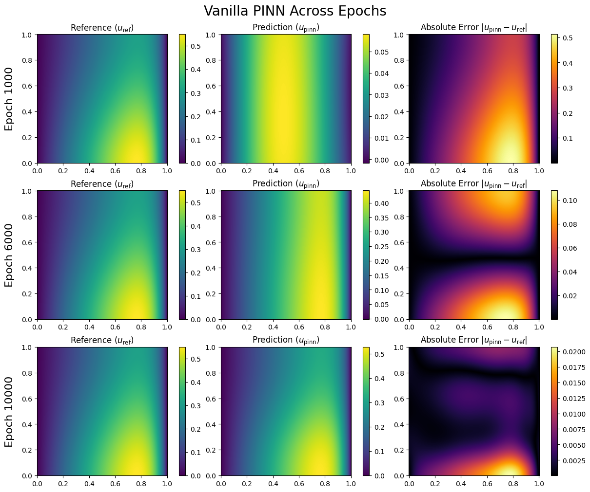
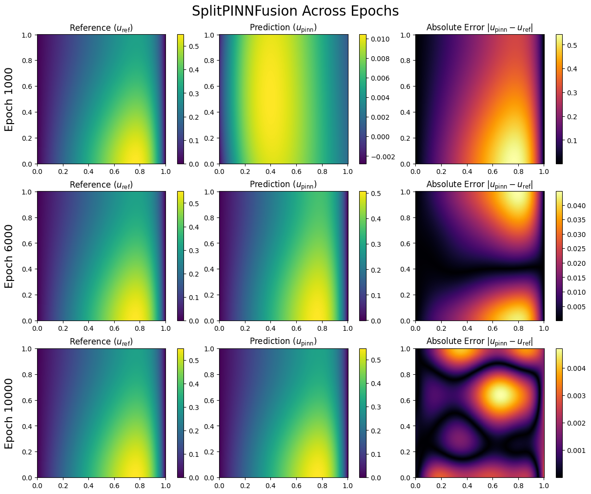

Experiments
Activation Function
The largest advantage of a split mechanism was having more fine-grained control over the training of each of the network’s components. Thus, we examined the behavior of the SplitPINNFusion network compared to the Vanilla PINN in the case where both branches used the
activation function, and in the case where the diffusion branch uses
and the convection branch uses
.
We initially hypothesized that since the convection term drives stiffness, a SiLU may perform better than a
because SiLU is non-saturating and allows for directional growth, whereas
is smooth and symmetric.
To test our hypothesis, we run the Vanilla architecture and each SplitPINNFusion variation for 10,000 epochs and evaluate test error.

Both SplitPINNFusion configurations demonstrate faster convergence than the baseline Vanilla PINN, indicating that the architectural decoupling improves the PDE learning process independent of the choice of activation. The SplitPINNFusion SiLU variation converges in
epochs, while the
architecture converges in
epochs, and the Vanilla model converges in
epochs. Both split architectures converge faster than the Vanilla model, and the SplitPINNFusion SiLU variation achieves
faster convergence rate than the baseline
architecture.
Fusing Mechanism
To assess the influence of the recombination strategy on solution quality, we evaluate three fusion mechanisms for integrating the outputs of the convection and diffusion branches: SplitPINNFusion, AddPINN, MixedPINN. The relative contribution of convection and diffusion can differ substantially across the domain, suggesting that a flexible fusion strategy may better capture local variations in PDE behavior. Our hypothesis is that a learned gating mechanism will provide superior performance, as it can modulate the branch contributions in a spatially adaptive manner, whereas fixed additive fusion may be too restrictive. We believe that feature-level mixing may complicate optimization without offering targeted control over the physical PDE operators. We run each architecture below and summarize convergence history in Figure X.

We observed that AddPINN converged in 9695 epochs, SplitPINNFusion converged in 5368 epochs, and MixedPINN converged in 6040 epochs. Our findings corroborate our initial hypothesis: the AddPINN and MixedPINN mechanisms take longer to fully capture the coupling between the convective and diffusion term needed to satisfy the governing equation.
Varying Epsilon
We examine the behavior of the SplitPINNFusion architecture under increasing convection dominance by varying the diffusion coefficient over
.
This experiment is intended to characterize model robustness as the governing PDE becomes progressively stiffer and develops high near-wall gradients. Since high Peclet regimes are known to challenge traditional PINN formulations, this setup enables a controlled evaluation of whether architectural decoupling mitigates these difficulties. We hypothesize that the split architectures—and in particular the fusion-based variant—will demonstrate improved convergence properties at smaller
,
reflecting their ability to isolate and separately parameterize the distinct physical operators that dominate in different regions of the domain.

From Figure Y, SplitPINNFusion consistently converges faster than the baseline Vanilla PINN across all
values, validating our hypothesis. In Table
,
at
,
our model achieves a
faster convergence rate than the baseline. As
increases, the PDE becomes more diffusion-dominated, resulting in a smoother solution and enabling all models to converge in fewer epochs; however, the SplitPINNFusion architecture still maintains a measurable advantage, achieving up to
faster convergence at
.
| ε |
Vanilla Convergence Epoch |
SplitPINNFusion Convergence Epoch |
Percentage Faster |
| 0.01 |
7717 |
5368 |
30.4% |
| 0.05 |
1123 |
997 |
11.2% |
| 0.1 |
317 |
237 |
25.2% |
Final Vanilla and SplitPINNFusion Outputs Across Epochs

Over the first
epochs, the Vanilla PINN begins to learn the general structure of the solution while satisfying the Dirichlet and Neumann boundary conditions. As the model continues to learn, it begins resolving the inner solution gradients by adjusting the model weights needed to minimize the PDE-governed loss function. At
epochs, the model continues to resolve the solution over the entire domain, and the resulting prediction is close to the reference solution.
The heat map evolution demonstrates that as the model continues to learn, the residual error is primarily near the Neumann boundaries. The exponentially decaying source induces strong forcing about
,
which serves as the driving source of error in the model.

Early in model training, the SplitPINN similarly begins with a smoothed initial guess based on the randomized weights. As the model continues to learn, it resolves the boundary conditions and the inner solution gradients by adjusting the model weights needed to minimize the PDE-governed loss function. At
epochs, the model fine-tunes the solution, resulting in a prediction that is nearly indistinguishable from the reference solution.
The heat map shows that initial iterations are driven by the Neumann boundaries and the spatially varying source, but by
epochs the residual becomes primarily dominated by the former. Over each range of plotted samples, the absolute error drops by an order of magnitude as a result of improved expressiveness. Our solution tended to outperform the Vanilla architecture at each of the sampled cycles, as shown in Table
.
| Model |
MSE |
Rel. L2 |
Max Error |
MAE |
| Vanilla (epoch = 1000) |
6.5e-02 |
8.8e-01 |
5.1e-01 |
2.2e-01 |
| SplitPINNFusion (epoch = 1000) |
8.1e-02 |
9.8e-01 |
5.4e-01 |
2.5e-01 |
| Vanilla (epoch = 6000) |
2.3e-03 |
1.6e-01 |
1.1e-01 |
3.8e-02 |
| SplitPINNFusion (epoch = 6000) |
3.4e-04 |
6.4e-02 |
4.5e-02 |
1.4e-02 |
| Vanilla (epoch = 10000) |
2.8e-05 |
1.8e-02 |
2.1e-02 |
3.7e-03 |
| SplitPINNFusion (epoch = 10000) |
3.1e-06 |
6.1e-03 |
4.7e-03 |
1.4e-03 |